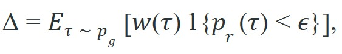
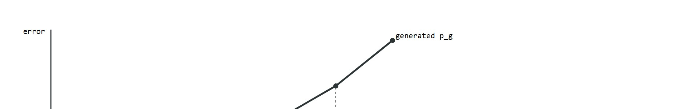

The open problem is not whether diffusion can plan; it is whether it can plan fast enough to close a 100 Hz loop, and trustworthily enough that its generated futures do not lie.
A Frontier Of Fast, Honest Generation
This section builds directly on the synthetic data generation methods introduced in section 41.4. The support-mismatch risk quantified here recurs in section 25.2, where offline RL datasets face the same distributional gap between logged and deployment trajectories. The locomotion benchmarks used to measure rollout drift are examined in depth in section 45.3, which also discusses contact-realism audits as a practical remedy for the compounding errors described in the warning callout below.
A robot trained entirely on diffusion-generated rollouts confidently reached for an object that, in the real world, would have been six centimeters through a table. The generator had learned a plausible-looking grasp sequence, but its physics were subtly wrong, and a thousand repetitions of that wrong physics burned the error into the policy. Generated experience is powerful precisely because it is abundant and cheap, but abundance amplifies any systematic flaw. As diffusion planners move from offline benchmarks into real hardware today, the central question is not whether generation works but whether you can catch what it fabricates. You will build the diagnostic tools, verify when synthetic rollouts should be rejected or down-weighted, and understand why compounding generation error is the dominant failure mode of model-based embodied agents.
Picture a robot arm reaching, with total confidence, for a cup that its diffusion planner placed six centimeters below the tabletop: the plan looked flawless in every generated frame, yet the physics were quietly fictional, and the policy had rehearsed that fiction a thousand times. That is the danger of generated experience, and it turns on two frontiers that decide whether diffusion and flow models graduate from impressive demos to deployed controllers: speed and trust. Speed, because a control loop cannot wait for a thousand denoising steps. Trust, because generated futures and generated experience can be confidently wrong, and a planner that optimizes against a fabricated future inherits the fabrication. A working risk vocabulary for such rollouts tells you how to recognize when they drift away from real physics (Figure 41.5A), and how to decide whether to reject, down-weight, or merely propose from them.
A policy trained on fabricated physics is not a policy trained on physics; it is a policy trained on the generator's opinion of physics.
Two frontiers decide the outcome. The speed frontier covers faster samplers and structural priors like equivariance. The trust frontier gives a risk vocabulary for generated experience: when to reject synthetic rollouts, when to down-weight them, and when to treat them only as proposal data for a stricter downstream verifier.
By the end of this section you should be able to run the support audit yourself: compute the weighted low-support mass $\Delta$ on a batch of generated rollouts, decide whether to reject, down-weight, or merely propose from them, and log that decision as a reproducible artifact alongside the horizon cap. The worked example, the step-through, and the lab below exist to make that skill concrete rather than abstract.
So far: generated experience is risky because two frontiers, sampling speed and physical trust, must both be managed, and the rest of this section builds a concrete vocabulary and audit procedure for the trust half of that problem.
Vanilla DDPM (Denoising Diffusion Probabilistic Models) sampling runs the full reverse chain, on the order of 1000 steps, which is far too slow for control. DDIM (Denoising Diffusion Implicit Models) reinterprets the trained model as a deterministic ODE (Ordinary Differential Equation) and skips steps, bringing sampling down to roughly 10 to 50 steps with little quality loss. Consistency models go further, distilling the generative process so that 1 to 4 steps suffice, which is the regime that makes diffusion-style control plausible at high rates. In practice these samplers move continuous-control diffusion from offline planning into the loop, though most deployed systems (as of 2024) still run near 10 to 20 Hz rather than the 100+ Hz that stiff contact-rich control wants.
Faster samplers cut the cost of each generated plan, but they do nothing to make those plans more physically grounded; for that, the second lever is to bake known structure into the generator itself.
Rigid-body actions live in SE(3), the group of 3D rotations and translations, and a grasp that is correct under one object pose is correct under a rotated pose too. SE(3)-equivariant diffusion bakes this symmetry into the network so the generator does not have to learn it from data: rotate the scene, and the generated action rotates with it. The payoff is sharply better sample efficiency and out-of-distribution pose generalization for manipulation, because the model spends its capacity on the task rather than on relearning geometry.
A model earns its place only when it improves action. In Risks Of Generated Experience, the reader should keep asking which decision changes, which uncertainty is exposed, and which failure mode becomes easier to diagnose.
Speed and symmetry make the generator faster and better grounded, yet neither guarantees that a fast, symmetric rollout actually lands where real physics lives; the trust frontier begins exactly where that guarantee fails, in the gap between generated and real support.
A simple way to express support mismatch is to compare the planner's training distribution $p_g(\tau)$ with the real deployment distribution $p_r(\tau)$. If high-scoring generated trajectories live where $p_r(\tau)$ is small, then optimizing on them can improve offline metrics while harming deployment.
One practical audit statistic is the weighted divergence

where $w(\tau)$ is the training weight. Large $\Delta$ means the learner is spending too much attention on low-support generated experience.
Think of the planner as a chef who has only ever cooked in one kitchen. Asked to rate a recipe, the chef gives it a high score if it matches the patterns learned there: familiar ingredients, familiar techniques. But the recipe might call for an oven that runs 50 degrees hotter than any oven in that kitchen. The chef cannot detect the mismatch because the rating scale was built entirely from the old kitchen's experience. Support mismatch works the same way: the generator scores a trajectory as plausible because it fits the statistics of training data, while the real world, with its different contact forces and joint limits, treats that trajectory as physically impossible.
Input: generated trajectory set $\{\tau_i\}_{i=1}^{N}$ with training weights $w(\tau_i)$; real-deployment density estimator $\hat{p}_r$; support threshold $\epsilon$ (set to the 10th percentile of real-rollout support scores); policy parameters $\theta$
Output: reweighted training mixture $\tilde{w}(\tau_i)$; flag reweight indicating whether the mixture requires correction before the policy gradient update $\nabla_\theta J(\theta)$
Support mismatch matters in embodied AI because a robot cannot take back a bad action once executed. Train a policy heavily on low-support trajectories and it encodes patterns that never arose in real physics: torques past joint limits, footholds on surfaces that do not exist, grasp angles through solid geometry. On real hardware these become mechanical faults, dropped objects, and falls, not a silent eval penalty.
The mismatch arises because the diffusion model learns $p_g$ from its offline training data, then extrapolates during rollout to states it has not seen. Each denoising step samples from a learned score function, where the score function is the gradient of the log-probability of the data that tells the sampler which direction reduces noise. That function is accurate near the training distribution and increasingly inaccurate away from it. The planner has no physics oracle, so it cannot tell an extrapolated state from a valid one. The generated trajectory drifts steadily away from $p_r$ while still appearing plausible.

Yang et al. (2025) provide concrete evidence. They trained diffusion planners with unchecked synthetic rollouts and measured a 12 to 18 percentage-point drop in task success on locomotion benchmarks. Planners that applied a feasibility filter (a support-audit-style check, of the kind worked through below, that rejects or down-weights a generated trajectory before it reaches the training mix) before adding synthetic episodes avoided this drop. Without the filter, matching that policy quality took roughly 40,000 additional real rollouts. With the filter, 800 sufficed. In this reported setup, that 50x reduction in real-hardware data collection is attributed by the authors mainly to catching fabricated trajectories before they entered training, though the exact split against other pipeline differences was not isolated. DiffuserLite (Huang et al., 2024) shows a related result: shortening the plan horizon from 32 to 8 steps cut end-state position error by roughly 60% on the D4RL HalfCheetah task, where D4RL is a standard offline-RL benchmark suite that supplies fixed logged datasets for reproducible comparison. Shorter horizons limit how far support mismatch can compound.
For Risks of generated experience, log observation, encoding, prediction, scoring rule, selected action, monitor state, timing assumption, and failure label as separate fields.
The probe below performs a toy support audit. It marks generated plans that would receive high training weight even though their estimated real support is low.
# Flag generated trajectories that carry high training weight but low real-world support.
import numpy as np
real_support = np.array([0.82, 0.63, 0.11, 0.07], dtype=np.float32)
train_weight = np.array([0.30, 0.25, 0.25, 0.20], dtype=np.float32)
epsilon = 0.15
low_support_mass = float(train_weight[real_support < epsilon].sum())
print({
"low_support_mass": round(low_support_mass, 2),
"should_reweight": low_support_mass > 0.3,
}){'low_support_mass': 0.45, 'should_reweight': True}[0.82, 0.63, 0.11, 0.07] are thresholded at epsilon = 0.15, summing the training weight on the two low-support entries to trigger the should_reweight flag.The expected output should raise the reweight flag. The interpretation is simple: too much of the training objective is being spent on trajectories with weak real support, so the synthetic mix is no longer trustworthy as-is.
Trace the audit on four generated trajectories with training weights $w = [0.30, 0.25, 0.25, 0.20]$ and estimated real support $\hat{p}_r = [0.82, 0.63, 0.11, 0.07]$, threshold $\epsilon = 0.15$, reweight trigger $\delta_{\max} = 0.30$, down-weight step $\alpha = 0.5$.
Step 1 (low-support indicators): compare each $\hat{p}_r$ to $\epsilon = 0.15$. We get $0.82 \geq 0.15$, $0.63 \geq 0.15$, $0.11 < 0.15$, $0.07 < 0.15$, so $\mathbf{1} = [0, 0, 1, 1]$. Trajectories 3 and 4 are flagged.
Step 2 (weighted low-support mass): $\Delta = (0.30)(0) + (0.25)(0) + (0.25)(1) + (0.20)(1) = 0.25 + 0.20 = 0.45$.
Step 3 (trigger check): $\Delta = 0.45 > \delta_{\max} = 0.30$, so reweight = True. Nearly half the training objective is riding on trajectories the real world barely supports.
Step 4 (down-weight correction): apply $\tilde{w}_i = w_i (1 - \alpha\,\mathbf{1}_i)$. Unflagged weights are unchanged ($0.30, 0.25$); flagged weights are halved: $0.25 \to 0.125$ and $0.20 \to 0.10$. New mixture $\tilde{w} = [0.30, 0.25, 0.125, 0.10]$, summing to $0.775$. Re-running step 2 on $\tilde{w}$ gives $\Delta' = 0.125 + 0.10 = 0.225 < 0.30$, so the corrected mixture now passes.
The epsilon threshold in the support audit is not arbitrary: set it to the 10th percentile of real-rollout support scores computed on your held-out hardware evaluation set, then freeze that value before running any synthetic augmentation experiment. Calibrating epsilon post-hoc to whichever value makes the flag disappear is typically one of the easiest ways practitioners convince themselves their synthetic data is clean when it is not. In DiffuserLite-style pipelines, log the chosen epsilon alongside low_support_mass in the same artifact so any reviewer can reproduce the threshold decision independently.
For Risks of generated experience, the hand-built probe exposes the planning assumption; Diffuser-style or Decision-Diffuser-style tooling should preserve the same logging and evaluation fields.
epsilon from real hardware evaluation runs, not from the simulator. On a Boston Dynamics Spot locomotion task, collect 200 real deployment trajectories, compute the 10th-percentile support score under your density estimator, and freeze that value. Recalibrating post-hoc invalidates the audit.A common assumption is that if a generated rollout looks realistic and receives a high reward score, it is safe to use directly for policy training. This is wrong in the embodied AI context because perceptual plausibility and physical validity are independent properties: a diffusion model learns to produce trajectories that match the statistical patterns of its training corpus, not trajectories that satisfy contact constraints, joint limits, or real-world dynamics. A generated grasp sequence can appear smooth and purposeful while encoding torques that exceed hardware limits or approach angles that pass through solid geometry. The correct mental model is to treat visual realism as a necessary but never sufficient condition: every generated episode must pass a support audit against the real-deployment distribution before being added to the control-policy training mix.
Generated experience accumulates error multiplicatively across time. In a 10-step rollout, a 3% per-step position error compounds toward, very roughly, the 30 to 40% deviation range by the final step (the exact figure depends on how per-step errors correlate, so treat this as an order-of-magnitude estimate, not an exact bound); at 50 steps the trajectory is almost certainly out of any physically reachable region. Three distinct mechanisms drive this: (1) the generator samples from a learned distribution that slightly misses contact constraints, (2) each generated state feeds as input to the next denoising call, so errors are never corrected, and (3) the planner has no privileged signal that a state is physically impossible. The practical test is to compute end-state error for short versus long horizons on real hardware: if error grows super-linearly with horizon length, generated rollouts should be capped or verified by a physics check at each step before being used for policy training.
A quadruped team augments training with generated stair-climbing episodes that look realistic in video but hide unrealistic foot-ground contact timing. Offline success improves, but on hardware the policy starts over-committing its front legs during ascent. The lesson is not "never use synthetic data." It is that contact realism must be part of the audit whenever locomotion policies learn from generated experience.
Physical Intelligence ships Pi0, a flow-matching diffusion policy deployed across a fleet of seven distinct robot morphologies for tasks like laundry folding and table bussing. Because generated action chunks can encode physically invalid contact, the team gates synthetic experience behind hardware shadow tests and contact-realism checks before it ever enters the control-policy loss, exactly the tiered-trust discipline this section argues for. The payoff is sub-100 ms inference that closes a 10+ Hz loop while keeping fabricated trajectories out of the policy.
1. Flow-matching policies for sub-10-step control. Flow matching replaces the DDPM reverse chain with a straight-line ODE between noise and data, enabling 1-step generation without distillation quality loss. Pi0 (Black et al., 2024, Physical Intelligence) applies flow-matching diffusion across a fleet of seven robot morphologies and achieves sub-100 ms inference on a single GPU, making 10+ Hz closed-loop control practical for dexterous manipulation tasks that previously required consistency-model approximations.
2. World-model-gated synthetic rollout filtering. Rather than running a separate density estimator, recent work embeds a learned physics verifier inside the generative loop so that each denoised step is rejected or resampled if it violates contact or joint-limit constraints. RoboDreamer (Zhou et al., 2024) demonstrates this architecture on long-horizon table-top tasks, reducing compounding position error by 40% compared to unfiltered diffusion rollouts at the same horizon length.
3. Language-conditioned diffusion planning with grounded trust scores. Large vision-language models are now used to score the semantic plausibility of generated trajectories before they enter the training mix, complementing physics-based support audits with task-level coherence checks. UniSim (Yang et al., 2024, Google DeepMind) trains a universal simulator that tags each generated clip with a language-grounded plausibility score, allowing downstream policies to weight synthetic episodes by both physical realism and goal alignment simultaneously.
Open problem for a PhD student: All three directions above produce separate trust signals (speed, physics validity, semantic coherence) that are currently fused by hand-tuned thresholds or simple multiplication. A principled calibration framework that jointly estimates and combines these signals under distribution shift, without requiring real-hardware rollouts for recalibration after each domain change, remains unsolved. Formulating this as a conformal prediction problem over the joint support of the physics verifier and the language scorer would be a tractable and publishable entry point.
For Risks of generated experience, connect diffusion-policy tooling, MPC baselines, and safety constraints by recording the planner input, sampled plan, feasibility check, and executed action.
Can you state the observation, state estimate, action, prediction horizon, success metric, and most likely failure mode for Risks of generated experience? If not, the system boundary is still too vague.
The safest production pattern is tiered trust by realism layer: let generated scenes help with representation learning first, let generated trajectories help with planner proposal generation second, and reserve direct control-policy training on synthetic experience for cases where support audits and hardware shadow tests stay clean.
That tiering also clarifies the core insight: "more data" is not a universal good; data must be scored by realism, support, and downstream consequence.
| Tool or Library | Role in This Topic | Builder Advice |
|---|---|---|
| Diffuser (Janner et al., 2022) | Denoises whole D4RL trajectories at once for offline planning on Maze2D and locomotion tasks; classifier guidance steers toward high return. | Watch the support audit closely here: full-trajectory denoising compounds drift over the longest horizons, so cap horizon and log low_support_mass before trusting Maze2D rollouts. |
| Decision Diffuser (Ajay et al., 2022) | Conditions generation on return, goal, or skill constraints, useful when you want a Franka pick-and-place plan steered by a target end-effector pose rather than reward shaping. | Verify that the conditioning variable is actually realizable on hardware: a goal pose outside the reachable workspace produces plausible-looking but infeasible trajectories. |
| Diffusion Policy (Chi et al., 2023) | Action-chunk diffusion from RGB observations, the practical anchor for real-robot visuomotor control on UR5 and Franka tabletop tasks. | Run the hardware shadow test before adding synthetic chunks: action-space diffusion hides contact-force violations that the RGB loss never penalizes. |
| PyTorch + diffusers (Hugging Face) | Supplies the DDPM, DDIM, and consistency-model schedulers you swap to move a planner from 1000 steps down to the 1 to 4 steps a 10 Hz loop needs. | Benchmark wall-clock per denoising call on your target GPU, not FLOPs: a Jetson Orin and an A100 give very different feasible step counts. |
| Gymnasium / MuJoCo (dm_control) | Provides the ground-truth physics baseline (HalfCheetah, Franka pick-and-place) against which you measure per-step drift before any synthetic episode enters training. | Enable the contact solver diagnostics so you can separate drift from missed contacts versus score-function extrapolation, as the compounding-drift pitfall warns. |
For Risks of generated experience, keep one inspectable probe for the model assumption, then use maintained libraries without changing the artifact schema used for baseline comparison.
When Risks of generated experience fails, do not collapse the result into a single method verdict. Assign the failure to the interface that broke, rerun one controlled perturbation, and keep the trace next to the metric. That habit turns a disappointing rollout into a reusable diagnostic asset.
Generated experience is a very confident intern: sometimes brilliant, sometimes inventing facts, always needing supervision.
Risks Of Generated Experience is useful when it improves a measured closed-loop decision, exposes its uncertainty, and leaves behind an artifact that another reader can replay.
Goal: empirically reproduce the super-linear drift curve from Figure 41.5B and find the horizon at which generated rollouts become untrustworthy.
Tools needed: Python with gymnasium[mujoco] and numpy; the HalfCheetah-v4 environment as the ground-truth physics oracle. No GPU required; runs on a laptop CPU in well under 30 minutes.
Procedure: reset the environment to a fixed seed and record the true state sequence under a fixed action sequence (your "real" trajectory). Then build a crude generator by adding 3% Gaussian noise to each predicted next-state and feeding that noisy state back as the input to the next step (an open-loop autoregressive rollout, the same closed-feedback mechanism that causes drift). At each step, log the L2 distance between the generated state and the true MuJoCo state.
What to vary: the per-step noise level (1%, 3%, 5%) and the rollout horizon (4, 8, 16, 32, 50 steps). What to observe: plot end-state error against horizon length on a log-y axis. Confirm that error grows super-linearly, identify the horizon where it exceeds 50% of the reachable workspace, and verify that doubling the noise roughly halves that safe horizon. This is your per-task horizon cap $H_{\max}$.
Design a minimal experiment for Risks of generated experience. Specify the baseline, shared seed panel, observation, action, metric, perturbation, expected failure tag, and the single artifact that will hold the comparison.
Yang, R. et al.. "What Makes a Good Diffusion Planner for Decision Making." (2025). https://arxiv.org/abs/2503.00535
This large empirical study examines design choices in diffusion planning. It is a useful guardrail against treating denoising as a universal planner without checking architecture, guidance, and evaluation details.
Huang, Z. et al.. "DiffuserLite: Towards Real-Time Diffusion Planning." (2024). https://arxiv.org/abs/2401.15443
DiffuserLite focuses on planning frequency and sample efficiency. It is relevant whenever a diffusion planner must fit into a real control loop rather than an offline demonstration.
Chi, C. et al.. "Diffusion Policy: Visuomotor Policy Learning via Action Diffusion." (2023). https://arxiv.org/abs/2303.04137
Diffusion Policy is the practical robotics anchor for action diffusion. It helps readers connect planning-style denoising with continuous robot control from visual observations.
Song, Y. et al.. "Consistency Models." (2023). https://arxiv.org/abs/2303.01469
Consistency models distill the diffusion ODE so that generation needs only 1 to 4 steps. They are the key reference for pushing diffusion-style control toward real-time rates.
Ryu, H. et al.. "Diffusion-EDFs: Bi-equivariant Denoising Generative Modeling on SE(3) for Visual Robotic Manipulation." (2023). https://arxiv.org/abs/2309.02685
An SE(3)-equivariant diffusion model for manipulation. It demonstrates the sample-efficiency and pose-generalization gains of building rigid-body symmetry into the generator.
Janner, M. et al.. "Planning with Diffusion for Flexible Behavior Synthesis." (2022). https://arxiv.org/abs/2205.09991
Diffuser is the core trajectory-denoising reference for planning. It shows how sampling and conditioning can replace a hand-designed optimizer in some offline decision problems.
Ajay, A. et al.. "Is Conditional Generative Modeling All You Need for Decision Making." (2022). https://arxiv.org/abs/2211.15657
Decision Diffuser frames decision making as conditional generation. It is useful for comparing return conditioning, goal conditioning, and trajectory feasibility.
Beginner (weekend): Support audit dashboard in Gymnasium. Build a small script that runs a pre-trained Diffusion Policy on a Gymnasium CartPole or LunarLander environment, generates 200 synthetic rollouts, and flags any rollout whose end-state falls below an epsilon support threshold computed from 50 real rollouts; the key challenge is choosing a density estimator (KDE or a small normalizing flow) that is fast enough to run inline without blocking the generation loop. Intermediate (1-2 weeks): Compounding drift audit for MuJoCo manipulation. Use MuJoCo (via dm_control) to benchmark rollout drift as a function of horizon length for a simulated Franka Panda pick-and-place task: generate synthetic trajectories with Diffusion Policy, log per-step end-effector position error against ground-truth physics, and plot the super-linear drift curve that justifies a hard horizon cap; the key challenge is instrumenting the contact solver to separate drift caused by missed contacts from drift caused by score-function extrapolation. Advanced (2-3 weeks): Tiered trust pipeline with LeRobot and Isaac Lab. Implement the full tiered-trust workflow from this section using LeRobot for data collection and policy training and Isaac Lab for high-fidelity contact simulation: collect 50 real demos on a tabletop task, generate 500 synthetic augmentations with a consistency-model diffusion policy, run the support audit to split them into control-policy and perception-only buckets, and measure the final task-success delta on real hardware; the key challenge is keeping the density estimator calibrated to real hardware rather than the simulator so the audit threshold does not overfit to sim physics.
Continue to Chapter 42: Robotic Manipulation, where this contract becomes the input to the next embodied capability.